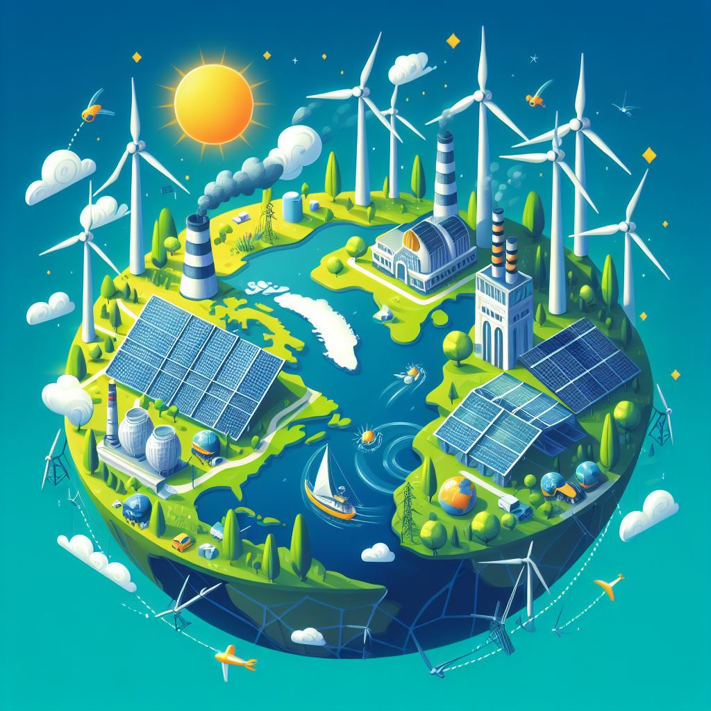

Capital mindset is destroying us: Corporations and Policy as the Destruction of our Climate.
Introduction
Buy an electric car. Take public transport. Use solar panels. Don’t eat beef. Stop wasting your food! These are the pressured suggestions of the media, apparently the only way to stop the destruction of our planet. But will this really work, or is it just a means to blame this problem on the everyday citizen. The everyday citizen had little to play in the arising of climate change, and they will have little effect in the ending of it. This is an issue of policy and corporation, but an issue covered up with denial and deflected away to all other menial issues living all throughout the media. But how is this done?
Corporate deception
The money and power in the corporate world is vast, it is the primary focus. Consequently, the denial and gaslighting in the issues of climate change is rampant, something that is common in all threats to the capital of the corporate world. Climate change is arguably the most pressing issue in the world right now, yet it has been softened to such an extent that, even with it being known for decades, it is only now becoming recognised and is merely regarded as one common little thing in our world. This is becoming a serious issue, and not only is it being downplayed, but the issue is being deflected. The media’s focus on climate change borders on mundane, while various other significantly more trivial issues become the central focus. Furthermore, after gaslighting and deflecting the issues of climate change, these corporations surround us with fossil fuels completely – everything uses fossil fuels. And as a result of this, we find ourselves feeling helpless to solve these issues, it has become a norm where those who can make change will not, and those who cannot are callously reassured that this issue is of little importance. Even so, these corporations claim that they are working to fix this issue, even if not of immediate concern.
“Renewable transition”
To help fix this issue, when it does eventually become a real concern, these corporations are apparently working to solve this issue and to replace our unsustainable resources with renewables in what is constantly advertised as a renewable transition. However, the issues of climate change have been known about, and have been neglected, for decades. Yet now that they have become undeniable and are visible to the public eye, these corporations will better their name and gain investors by working to stop this environmental crisis. Upon deeper reflection, however, one finds that these endeavours to fix our climate are lengthy studies and elaborate scientific projects set up to never disrupt these corporations' means of gaining money. But if a renewable transition really was in the works, would they not be investing, or even talking about, reshaping our grid? Would they not be obtaining energy via solar and wind farms? So if these corporations are so focused on keeping their businesses strong, they must at least have a worthwhile reason.

The Engine of Capitalism
Fundamentally, the reason for how we face these issues lies in the way in which our economic machine runs, for this is what underpins our whole society. We live in a capitalist society – and as a result we all live our lives as per that machine tells us to, to gain success and influence in that kind of an economy one must play the game of that economy very well. The corporate world and their money all play the game of capitalism and the game of capitalism does not call for renewable transitions, not unless the demand is truly spectacular. Capitalists are focused on profits – otherwise their position in the market will fall. To jeopardise those profits would be to risk their position in the market and this is something which no company will do, and this is now even less likely to have any chance of working given the efforts of these corporations to diminish this transition. As well as this, the corporate world needs to play to growth and demand, and the demand for a renewable transition now carries very little, something which will only lead to a profit loss. So, can this be fixed?
Economic transition
There are some solutions to fix our economy and make it more helpful in solving our problems. A specific one that applies directly to the problem, climate change in this case, is taxation. A system set up by policy with something such as a carbon tax would bring more consideration into corporate minds and it likely would not destroy these corporations' profits as it would not only be universal but would not disrupt the supply and demand. However, a more radical change which we may need to call upon is a reshaping of our economy – a new strand of capitalism, one that supports sustainable innovation. A key supporter of this idea is Rebbeca Henderson, an American economist and Harvard professor. She believes that we need to reimagine capitalism in a way which supports sustainable innovation and prioritisation on solving issues that we, as a society, are facing. Ultimately, she claims that this will lead to a more successful company in the long run. Yet it seems that the primary issue here lies in the focus on the long run – companies do not focus on the long run, they focus on the short-term profits and investment strategies, the long run is taken into account very little. This is the reason why a solution to this problem is dire yet unrealistic -- as long as a capitalist society exists there will be the capital mindset among those with real power, and this is not the only problem existing in our world which is common and almost inherent.